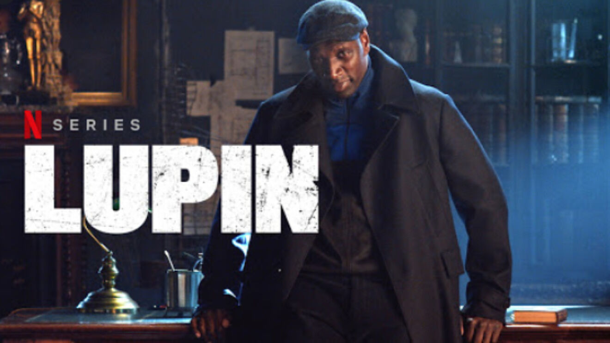
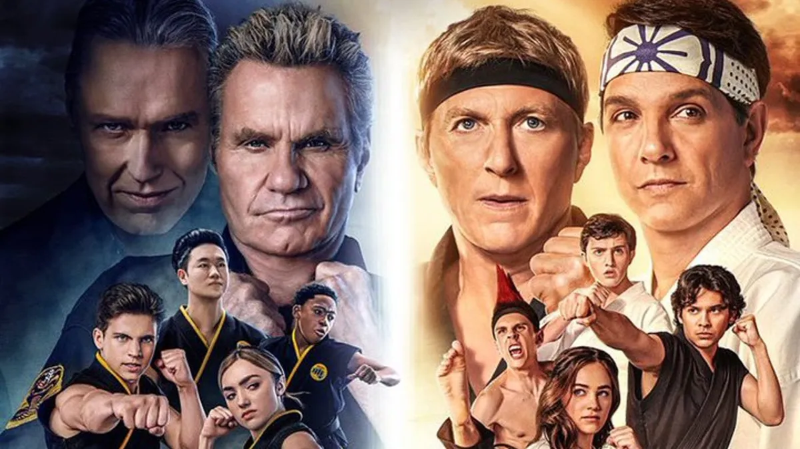
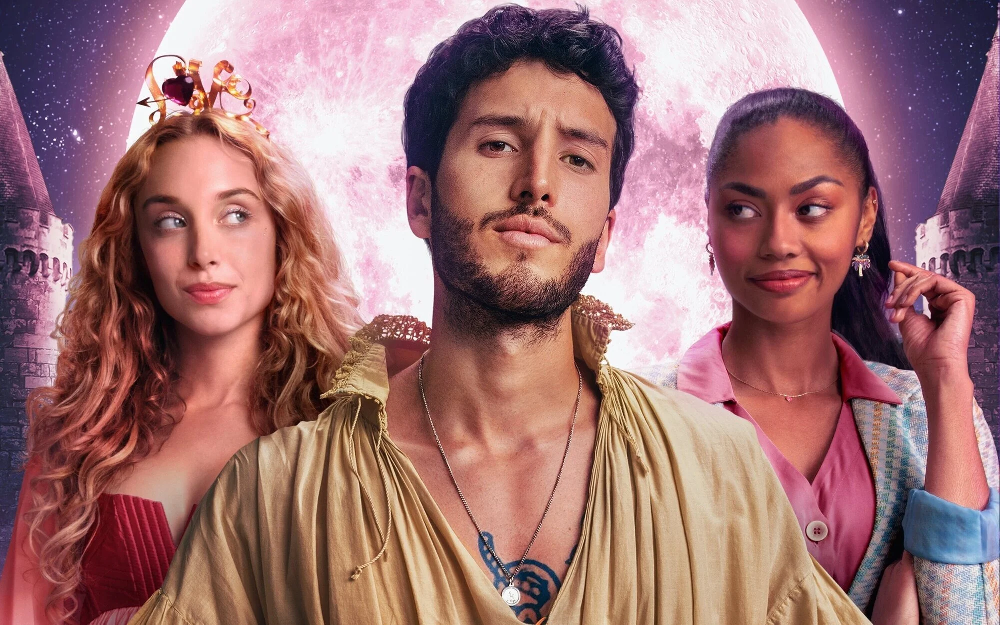

Películas y series ilimitadas y mucho más.
Ranking de series esta semana
- Yo nunca.
- Un lugar para soñar.
- Sexo/Vida.
- Élite.
- Atípico.
- The Good Doctor.
- Lupin.
- Pokémon Viajes: La serie.
Dataso:
¿Sabías que la serie favorita del creador es Lupin? Le encantan las series de Detectives que tienen varios giros de trama.
¿Quieres ver peliculas gratis? Estas en la pagina correcta esta pagina esta creada para todas aquellas personas que no tienen los recursos para pagar una suscripción mensual a una pagina de peliculas reconocidas. ¿Porque alguien crearia una pagina totalmente gratis para que alguien vea peliculas sin tener que pagar? te estaras preguntando, y esta pregunta se responde muy facil, siempre fui una persona que no tenia el dinero para pagar una suscripción a Netflix o Disney+ así que pensando en todas las personas como yo he creado esta pagina web con el fin de que todos pueden ver esa serie que tanto les gusta.
Series Favoritas
- Menu 
- Cobra Kai 
- Érase una vez... pero ya no 